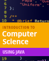
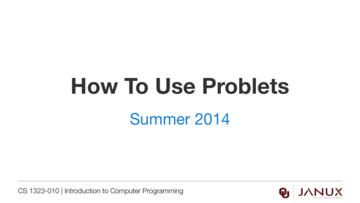
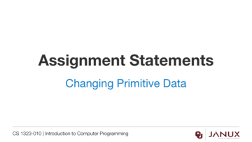
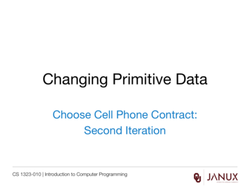
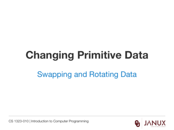

Changing Primitive Data
This section covers changing primitive data.
An introduction to changing primitive data.

Lecture presentation
Lecture presentation
Lecture presentation
Lecture presentation



